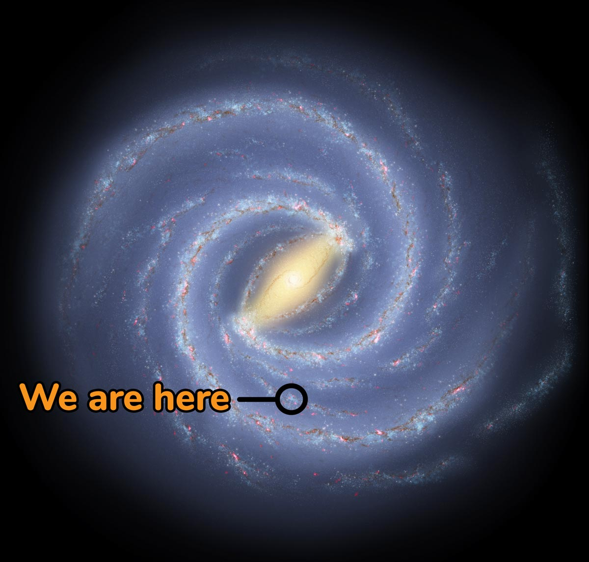

Milky Way[b] is the galaxy that includes our Solar System, with the name describing the galaxy's appearance from Earth: a hazy band of light seen in the night sky formed from stars that cannot be individually distinguished by the naked eye. The term Milky Way is a translation of the Latin via lactea, from the Greek γαλακτικός κύκλος (galaktikos kýklos), meaning "milky circle".[18][19][20] From Earth, the Milky Way appears as a band because its disk-shaped structure is viewed from within. Galileo Galilei first resolved the band of light into individual stars with his telescope in 1610. Until the early 1920s, most astronomers thought that the Milky Way contained all the stars in the Universe.[21] Following the 1920 Great Debate between the astronomers Harlow Shapley and Heber Curtis,[22] observations by Edwin Hubble showed that the Milky Way is just one of many galaxies.
The Milky Way is a barred spiral galaxy with an estimated D25 isophotal diameter of 26.8 ± 1.1 kiloparsecs (87,400 ± 3,590 light-years),[8] but only about 1,000 light years thick at the spiral arms (more at the bulge). Recent simulations suggest that a dark matter area, also containing some visible stars, may extend up to a diameter of almost 2 million light-years (613 kpc).[23][24] The Milky Way has several satellite galaxies and is part of the Local Group of galaxies, which form part of the Virgo Supercluster, which is itself a component of the Laniakea Supercluster.
Click Here to watch "Journey to the Center of the Milky Way Galaxy"!
The Milky Way is a disk that measures about 120,000 light years across, with a central bulge that has a diameter of about 12,000 light years. The disk is not perfectly flat though, it is warped due to our neighboring galaxies Large and Small Magellanic clouds. These two galaxies have been pulling on the matter in our galaxy like a game of tug-of-war.
The Milky Way is only a medium sized galaxy with an estimated 200 billion stars. The largest galaxy we know of is called IC 1101 and has over 100 trillion stars.
About 10-15% of the Milky Way’s visible matter is made of dust and gas, with the rest being stars. On a clear night, the dusty ring of the Milky Way can be seen in the night sky.
In order for the Milky Way to achieve its current size and shape it has consumed other galaxies throughout its history. Our galaxy is currently consuming the Canis Major Dwarf Galaxy by adding the smaller galaxy’s stars to its own spiral.
Since we are located about 26,000 light years from the Milky Way’s center we cannot take pictures of the disk. Any representation that you have ever seen of our galaxy is either a different spiral galaxy or what an artist thinks it might look like.
Exploration and curiousity of space has lead to some of the greatest achievements, as well as innovations in the history of mankind!
Click Here to view my website on The World Oceans!